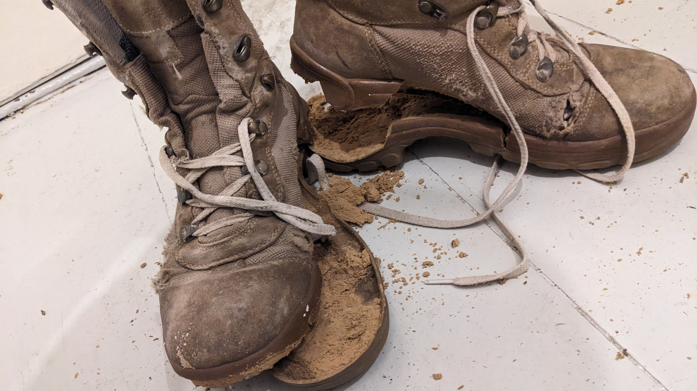
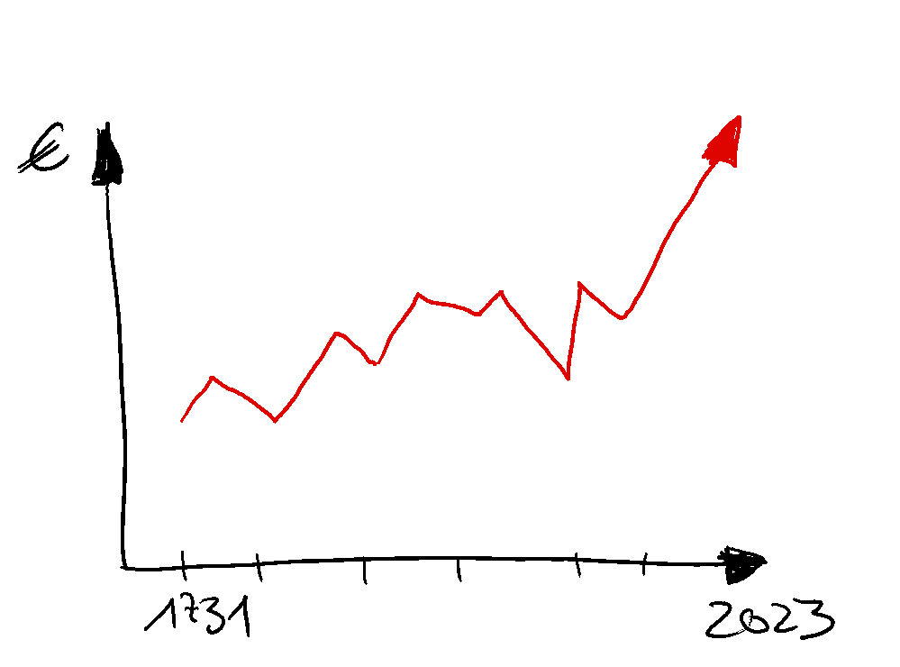

My 2,718281828459045235 Cents - - Das Dilemma der digitalen Güter
Was ist der große Vorteil digitaler Güter? Man kann sie beliebig, kostengünstig und verlustfrei verfielfältigen! Stell dir vor, man könnte “tangible” (tangibel - schlau-deutsch für “anfassbar”) konventionelle Güter wie Bier, Schuhe oder Autos duplizieren - einfach so! Das wäre fantastisch, ist aber, solange der Star Trek Replikator noch nicht existiert, eine utopische Traumvorstellung.
Digitale Güter altern in der Regel nicht: Das Paar Schuhe steht in meinem Schuhschrank und nach ein paar Monaten oder Jahren, je nach Umständen, sind die Schuhe verschlissen und ich muss mir neue kaufen. Doch bis dahin kann ich mit den Schuhen machen, was ich will. Bis sie zerfallen, so geschehen vor ein paar Tagen:

RIP Stiefel, 6. Dezember 2023, eigene AufnahmeEs ist also eigentlich eine gute Sache, dass wir zumindestens einen Teil (vielleicht sogar den wichtigsten? ;)) unseres Unterhaltungs-Bedürfnisses mit digitalen Produkten befriedigen dürfen. Bücher, Spiele, Filme, Serien, Podcasts - das Angebot ist vielfältig und groß. Und toll!
Aber es gibt auch einen Haken, es gibt immer einen Haken:
Das größte Risiko aus Angebots-Sicht, also der Hersteller von digitalen Gütern, ist die berüchtigte “Raubkopie”. Also das unerlaubte anfertigen von Duplikaten. Es gilt der Grundsatz: Ist es digital, lässt es sich kopieren. Das trifft übrigens auch auf NFT zu - ein NFT ist ein Besitznachweis, kein Kopierschutz.
Raubkopien gibt es, seit es Software gibt. Hersteller und - nun ja, wie nennen wir sie - diverse subversive Gruppen liefern sich ein Wettrennen, seit es Software gibt: Kopierschutz gegen unerlaubte Kopie. Piraterie ist indes kein Kavaliersdelikt und nicht cool.
Der Schaden einer Raubkopien ließe sich über den entgangenen Umsatz zwar messen. Studien zeigen aber sogar eine positive Wirkung auf den Konsum. Wirklich leiden tut die mehr als florierende Industrie darunter also eher nicht.

obligatorisches Chart des Umsatzwachstums der Unterhaltungsindustrie seit 1731, koloriert, eigene Darstellung
Aber auch aus Konsumenten-Sicht gibt es ein Problem: Digitale Bibiliotheken sind eine feine Sache. Aber dahinter steckt ein kompliziertes Geflecht aus juristischen Abhängigkeiten, Distributionsverträgen und Lizenzen. Für die Nutzer:innen hat das Jonglieren mit den “Verbreitungsrechten” im Hintergrund eigentlich keine Relevanz. Warum auch!? Darum: Es ist nicht das erste und wird nicht das letzte Mal sein: Sony löscht von dir erworbene Serien und Filme von deinem Computer. Der Grund ist ein Vertrag mit Discovery über die Vertriebslizenzen. Vor knapp 3 Jahren hatte Amazon gekaufte Filme aus deiner Bibliothek gelöscht, in 2009 waren es eBooks. Als der Musikstreaming Dienst Juke von MediaMarktSaturn damals seinen Dienst einstellte, bot man die Erstattung der gekauften Spiele und Filme zwar aus Kulanz (sic!), so richtig klappte das aber nicht. Die Liste ließe sich sicher belieg erweitern.
Wenn du jetzt denkst, die Lösung wäre ein 10 TByte NAS mit unverwüstlichen Bandlaufwerken, muss ich dich enttäuschen: Denn genau solche Szenarien werden durch moderne Kopierschutzmaßnahmen und permanten Online-Zwang unterbunden.
Was bleibt? Die fade Vorstellung, dass Nike eines Tages an meiner Tür klingelt, um meine WiFi-Zurück-In-Die-Zukunft-Schuhe zurückzufordern, weil die Lizenzvereinbarung mit Disney abgelaufen ist. Und wenn ich nicht zu Hause bin, werden die Schuhe aus der Ferne abgeschaltet…